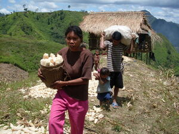

sapipi 
/sapipi/
v_rt.
“carry_on_side”
vt.
for someone (egsapipi, agent, eg><ø-) to carry a child (clinging to one's front or side) (egsapipiyen, patient, eg><en-) (but not under one's shirt)
Egsapipiyen ku ka batè ne eg-uyan.
We will carry a child (clinging to one's front or side) to bring them.
O. Syn. salulu —carry under shirt
Syn. sakepu
Eng. carry against body
Tag. kumílik; pumangkó
Ceb. kungkung
Ilo.: pakayangén; pumangkó
OCM: Burden Carrying (482)
Online dict status: -
Usage level: M
v.
for a child (egpasapipi, egpA><ø-) to request to be carried (clinging to someone's side)
Minsan dakel e ka anak ku ne egpasapipi pad iya keddì.
Eventhough my child already bigger he still requesting to carried clinging by side.
Eng. carried; cling
Online dict status: -
Usage level: M
Updated by: RJH,QDL
Last updated: 15/Oct/2009
"pegsapipi" in healthbook "Egmenuwen taa teg bawi kag lusungan"
This page last updated: 19/May/2012
Copyright © 2009-2010, Matigsalug Language Christian Association, Inc